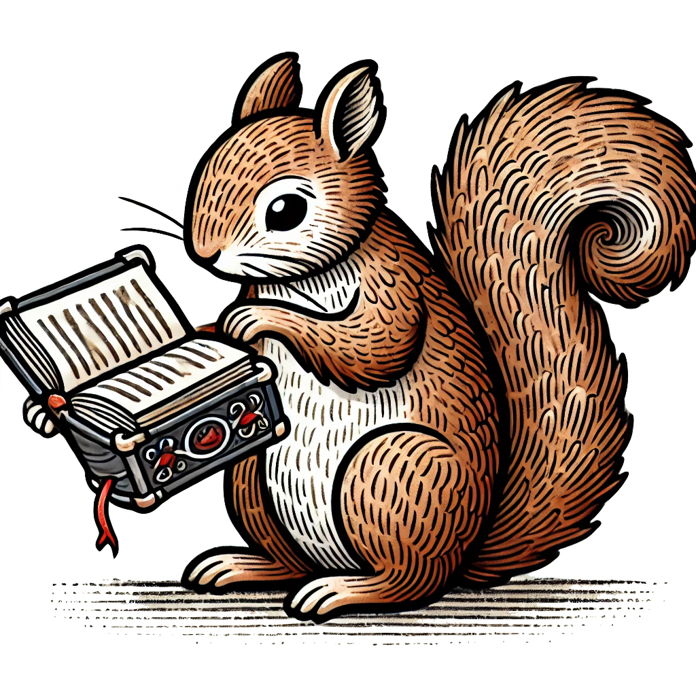

Writings
This page summarises my various writings, mainly scientific publications, main conference presentations and some educational materials. For the most current list of scientific publications, go to my Google Scholar profile page. Below, you can find a list of publications that is updated from time to time.
Apart from scientific publications, you can find some of my teaching materials here.
Lore papers
| Title | Journal | Year |
|---|---|---|
| Bayesian mixed model analysis uncovered 21 risk loci for chronic kidney disease in boxer dogs | PLoS Genetics | 2023 |
| FOXO1 and FOXO3 cooperatively regulate innate lymphoid cell development | Frontiers in immunology | 2022 |
| Contribution of rare whole-genome sequencing variants to plasma protein levels and the missing heritability | Nature Communications | 2022 |
| A genomic and morphometric analysis of alpine bumblebees: Ongoing reductions in tongue length but no clear genetic component | Molecular Ecology | 2022 |
| Linked-read whole-genome sequencing resolves common and private structural variants in multiple myeloma | Blood Advances | 2022 |
| FOXO Dictates Initiation of B Cell Development and Myeloid Restriction in Common Lymphoid Progenitors | Frontiers in Immunology | 2022 |
| GenErode: a bioinformatics pipeline to investigate genome erosion in endangered and extinct species | BMC bioinformatics | 2022 |
| Genetic barriers to historical gene flow between cryptic species of alpine bumblebees revealed by comparative population genomics | Molecular biology and evolution | 2021 |
| Genomic insights into the conservation status of the world’s last remaining Sumatran rhinoceros populations | Nature communications | 2021 |
| DNA metabarcoding for quality control of basil, Oregano, and Paprika | Frontiers in plant science | 2021 |
| The ABCC4 gene is associated with pyometra in golden retriever dogs | Scientific Reports | 2021 |
| Building de novo reference genome assemblies of complex eukaryotic microorganisms from single nuclei | Scientific Reports | 2020 |
| Transcriptomes from German shepherd dogs reveal differences in immune activity between atopic dermatitis affected and control skin | Immunogenetics | 2020 |
| Pre-extinction demographic stability and genomic signatures of adaptation in the woolly rhinoceros | Current Biology | 2020 |
| Analysing the joint effect of rare and common variants on human traits, using whole-genome sequencing data and a gene-based approach, increases the power to identify genetic effects | 2019 | |
| SETD2 Is Recurrently Mutated in Whole-Exome Sequenced Canine OsteosarcomaMutational Landscape in Canine Osteosarcoma | Cancer research | 2018 |
| Predicting post-translational modifications from local sequence fragments using machine learning algorithms: Overview and best practices | Prediction of Protein Secondary Structure | 2017 |
| A Model-Free Approach for Detecting Genomic Regions of Deep Divergence Using the Distribution of Haplotype Distances | bioRxiv | 2017 |
| Effect of breed on plasma endothelin-1 concentration, plasma renin activity, and serum cortisol concentration in healthy dogs | Journal of veterinary internal medicine | 2016 |
| Absolute quantification reveals the stable transmission of a high copy number variant linked to autoinflammatory disease | BMC genomics | 2016 |
| Multiple regulatory variants located in cell type-specific enhancers within the PKP2 locus form major risk and protective haplotypes for canine atopic dermatitis in German shepherd dog | BMC Genetics | 2016 |
| The shepherds’ tale: A genome-wide study across 9 dog breeds implicates two loci in the regulation of fructosamine serum concentration in Belgian shepherds | PloS one | 2015 |
| Genome-wide analyses suggest mechanisms involving early B-cell development in canine IgA deficiency | PLoS One | 2015 |
| Cgmisc: Enhanced genome-wide association analyses and visualization | Bioinformatics | 2015 |
| A multi-breed genome-wide association analysis for canine hypothyroidism identifies a shared major risk locus on CFA12 | PLoS One | 2015 |
| A risk haplotype within the PKP2 locus shows association to Canine Atopic Dermatitis and contains cell-type specific enhancers | 2015 | |
| Correction: Genome-Wide Analyses Suggest Mechanisms Involving Early B-Cell Development in Canine IgA Deficiency | Plos one | 2015 |
| Exploring weight data on over 100,000 Swedish dogs of various breeds | Acta Veterinaria Scandinavica | 2015 |
| Correction: Genome-Wide Analysis in German Shepherd Dogs Reveals Association of a Locus on CFA 27 with Atopic Dermatitis | Plos Genetics | 2015 |
| Ensemble learning prediction of protein–protein interactions using proteins functional annotations | Molecular BioSystems | 2014 |
| Breed differences in natriuretic peptides in healthy dogs | Journal of Veterinary Internal Medicine | 2014 |
| Evaluation of machine learning algorithms on protein-protein interactions | 2014 | |
| Breed Differences in Concentrations of Neuroendocrines and Cortisol in Healthy Dogs | Journal of Veterinary Internal Medicine | 2014 |
| Breed differences in concentrations of circulating vasoactive peptides and cortisol in healthy dogs | Journal of veterinary internal medicine | 2014 |
| Genome-wide analysis in German shepherd dogs reveals association of a locus on CFA 27 with atopic dermatitis | PLoS genetics | 2013 |
| Fine-grained adaptive divergence in an amphibian: genetic basis of phenotypic divergence and the role of nonrandom gene flow in restricting effective migration among wetlands | Molecular ecology | 2013 |
| Identification of candidate genes and mutations in QTL regions for chicken growth using bioinformatic analysis of NGS and SNP-chip data | Frontiers in genetics | 2013 |
| PASE: a novel method for functional prediction of amino acid substitutions based on physicochemical properties | Frontiers in genetics | 2013 |
| MAPfastR: quantitative trait loci mapping in outbred line crosses | G3: Genes, Genomes, Genetics | 2013 |
| Higher order interactions: detection of epistasis using machine learning and evolutionary computation | Genome-Wide Association Studies and Genomic Prediction | 2013 |
| Thorough investigation of a canine autoinflammatory disease (AID) confirms one main risk locus and suggests a modifier locus for amyloidosis | PLoS One | 2013 |
| Two loci on chromosome 5 are associated with serum IgE levels in Labrador retrievers | PloS one | 2012 |
| Effect of landscape in Rana arvalis genetic distance: application of circuit theory. | Forest | 2012 |
| The Monte Carlo feature selection and interdependency discovery is unbiased | Control and Cybernetics | 2011 |
| Monte Carlo feature selection and interdependency discovery in supervised classification | Advances in Machine Learning II: Dedicated to the Memory of Professor Ryszard S. Michalski | 2010 |
| Computational analysis of molecular interaction networks underlying change of HIV-1 resistance to selected reverse transcriptase inhibitors | Bioinformatics and biology insights | 2010 |
| Advances in Machine Learning | 2010 | |
| A rough set-based model of HIV-1 reverse transcriptase resistome | Bioinformatics and biology insights | 2009 |
| Construction of Rough Set-Based Classifiers for Predicting HIV Resistance to Nucleoside Reverse Transcriptase Inhibitors | Granular Computing: At the Junction of Rough Sets and Fuzzy Sets | 2008 |
| A statistical method for determining importance of variables in an information system | 2006 |
No matching items
